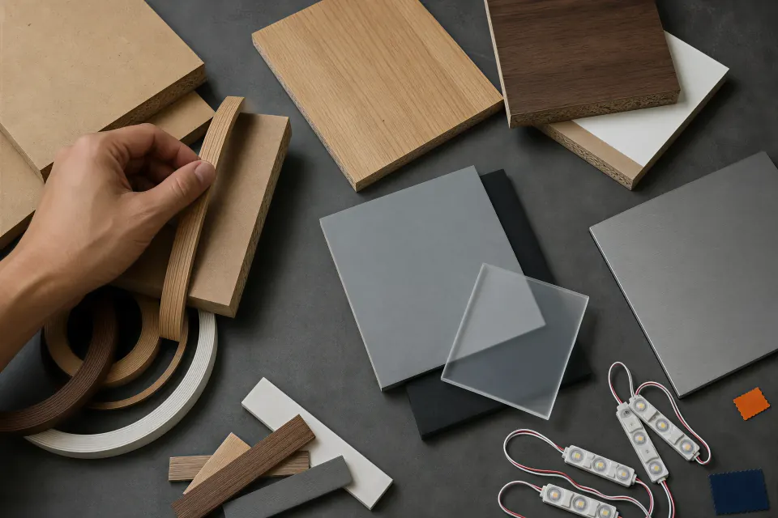
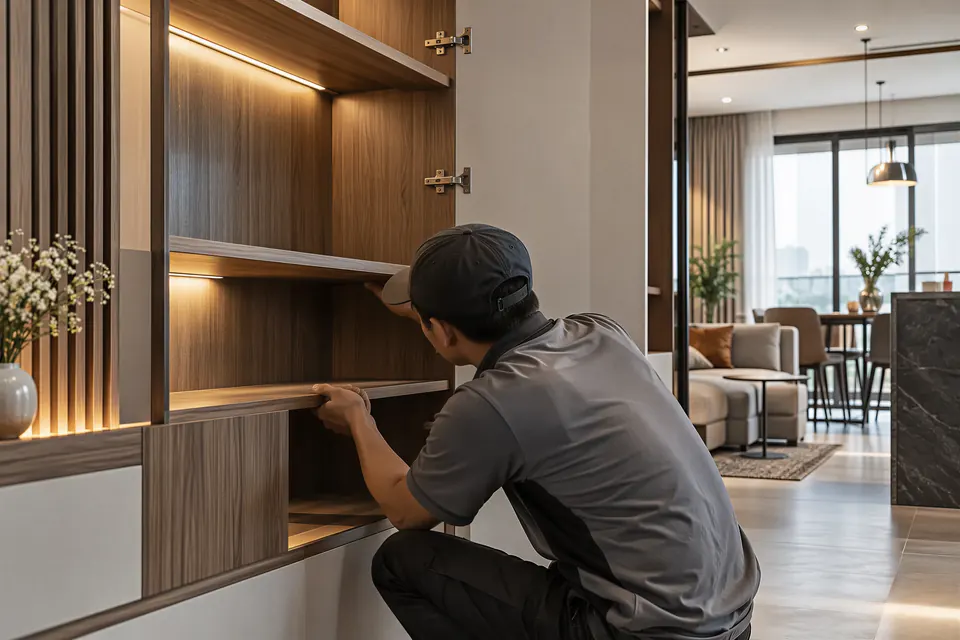

<!-- @dsCard group="Page" height=1400 -->
<!-- GENERATED by scripts/docs/build-design-system.mjs from src/site/residential/index.html; do not edit. -->
<link rel="stylesheet" href="https://fonts.googleapis.com/css2?family=Plus+Jakarta+Sans:ital,wght@0,300;0,400;0,500;0,600;0,700;1,300;1,500&display=swap">
<script>addEventListener("click", (event) => { if (event.target.closest("a[href]")) event.preventDefault(); }, true);</script>
<script>document.documentElement.lang = "vi"; document.documentElement.classList.add("motion-fallback", "motion-ready");</script>
<section
          class="detail-lead section-gap"
          id="tong-quan"
          data-header-tone="ink"
          aria-labelledby="intro-title"
        >
          <h2 class="detail-lead__title" id="intro-title" data-motion-lines>
            <span data-en="Spaces for">Không gian để</span>
            <i data-en="living">sống</i>
          </h2>
          <p class="detail-lead__copy">
            <span
              data-en="Every family lives in its own way. We start by listening to how you live, store things and spend time together, so your home is both beautiful and genuinely easy to live in."
            >
              Mỗi gia đình có một nếp sống riêng. Chúng tôi bắt đầu bằng việc lắng nghe cách bạn sinh hoạt, cất đồ và quây quần, để ngôi nhà vừa đẹp vừa thật sự dễ sống.
            </span>
          </p>
        </section>
<section
          class="detail-heading section-gap"
          id="quy-trinh"
          data-header-tone="ink"
          aria-labelledby="process-title"
        >
          <p
            class="detail-eyebrow"
            data-motion-fade
            data-en="ONE CONTINUOUS PROCESS"
          >
            MỘT NHỊP XUYÊN SUỐT
          </p>
          <h2 id="process-title" data-motion-lines>
            <span class="detail-line">
              <span data-motion-line-source data-en="From daily habits">
                Từ nếp sống
              </span>
            </span>
            <span class="detail-line">
              <span data-motion-line-source data-en="to a finished home">
                đến ngôi nhà hoàn thiện
              </span>
            </span>
          </h2>
        </section>
<section
          class="detail-duo section-gap"
          data-header-tone="ink"
          aria-labelledby="craft-title"
        >
          <h2 class="sr-only" id="craft-title" data-en="Materials and craft">
            Vật liệu và tay nghề
          </h2>
          <figure class="media-hover-zoom-trigger">
            
            <figcaption class="sr-only" data-en="Materials chosen for real use">
              Vật liệu được chọn cho sử dụng thật
            </figcaption>
          </figure>
          <figure class="media-hover-zoom-trigger">
            
            <figcaption class="sr-only" data-en="Craft passed forward">
              Tay nghề được tiếp nối
            </figcaption>
          </figure>
        </section>
